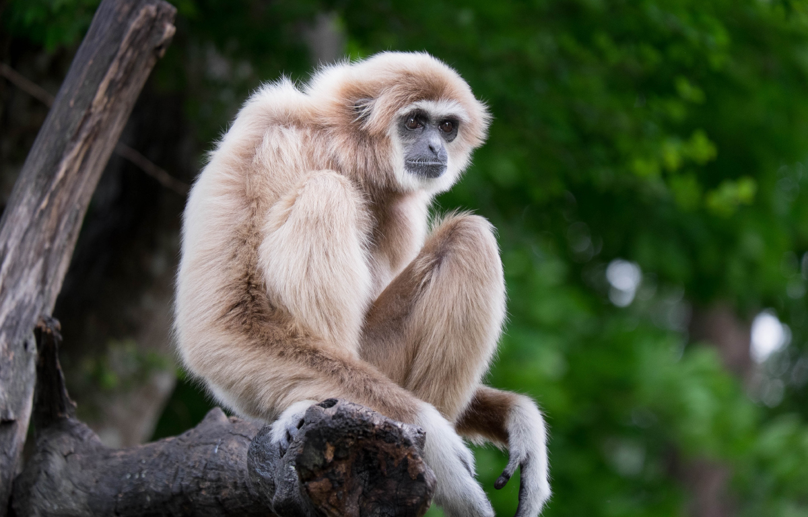

About Gibbons
Gibbons are acrobatic tree-dwelling primates primarily residing in the Rainforests of Southeast Asia characterized by their long limbs that allow them to swing through the trees.
Gibbon Sitting
Gibbon's Characteristics
- They're long
- They're loud
- They're social
- They can be fearful at times